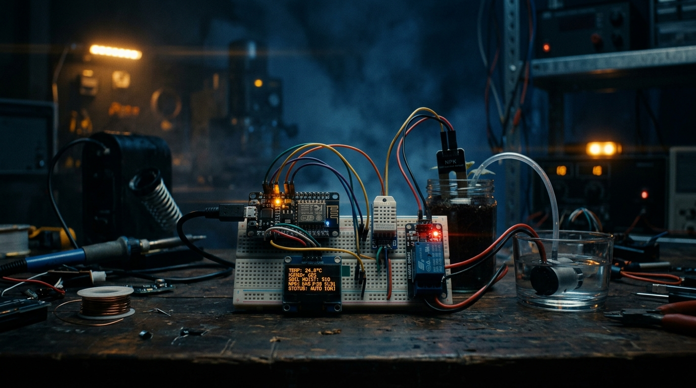
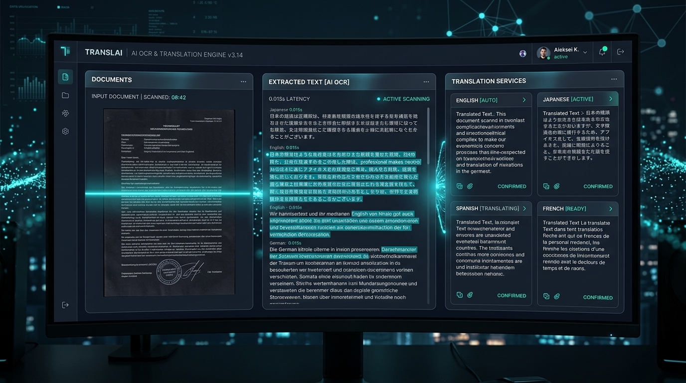

STEVE ANTTO D
Computer Science & Engineering | Artificial Intelligence & Machine Learning
◉ Tamil Nadu, India
from transformers import AutoModel
class NeuralAgent:
def __init__(self):
self.model = AutoModel.from_pretrained(
"qwen/qwen3-8b"
)
soil_moisture: 72.4% ▲
temperature: 28.5°C
humidity: 65.1%
npk_nitrogen: 42 mg/kg
pump_status: ACTIVE ●
IoT Soil Nutrient & Smart Irrigation System
A precision agriculture prototype that monitors soil health in real time and automates irrigation decisions through intelligent sensor fusion and cloud connectivity.
- ⚡ Real-time NPK nutrient analysis with calibrated sensor arrays providing actionable soil health metrics
- 🌡 DHT22 temperature & humidity monitoring with adaptive threshold algorithms for optimal plant growth
- 📡 NodeMCU ESP8266 wireless connectivity streaming live data to cloud dashboard with sub-second latency
- 💧 Relay-controlled water pump automation triggered by soil moisture thresholds — zero manual intervention
- 📊 OLED display for on-device status and a holographic-style web dashboard for remote monitoring

AI-Powered OCR & Translation Application
An intelligent document processing pipeline that extracts text from images in real time and translates across multiple languages with a sleek, modern interface.
- 🔍 Real-time optical character recognition powered by Tesseract OCR engine with multi-script support
- 🌐 Multi-language translation pipeline supporting 20+ languages with context-aware accuracy
- ⚛ Clean React.js frontend with elegant particle effects, live preview, and responsive design
- 🚀 FastAPI backend with async processing, enabling sub-second extraction and translation cycles
- 🔗 Streaming data architecture connecting frontend and backend through glowing real-time data flows

AI Desktop Agent — Offline Computer Agent
A fully offline AI agent that understands and interacts with your desktop environment — opening applications, reading windows, automating workflows — powered by a local Qwen 3 8B model running through Ollama.
- 🧠 Runs Qwen 3 8B locally via Ollama — complete privacy, zero cloud dependency, fully offline operation
- 🖥 Desktop awareness: understands open windows, active applications, and screen content through vision
- ⚙ Task automation: opens apps, navigates interfaces, fills forms, and executes multi-step workflows
- 🔒 Privacy-first architecture — all processing happens locally, no data ever leaves your machine
- 🔄 Extensible action framework for custom automation scripts and third-party tool integration
Technical Arsenal
A rapid montage of technologies, frameworks, and tools — each mastered through hands-on project experience.
Professional Journey
CodSoft — Python Development
Software Development Intern
Built Python-based applications and automation tools. Developed machine learning models for data analysis and contributed to production-grade backend services.
Freelance Web Development
Full-Stack Developer
Designed and deployed responsive websites for clients across diverse industries. End-to-end project delivery from UI/UX design to production deployment and hosting.
Network Engineering & Simulation
Cisco Packet Tracer
Designed complex network topologies and simulated enterprise-grade architectures using Cisco Packet Tracer. Configured routers, switches, VLANs, and routing protocols.
Building intelligent systems that connect AI with the real world.
STEVE ANTTO D
Crafting the future, one model at a time